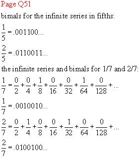
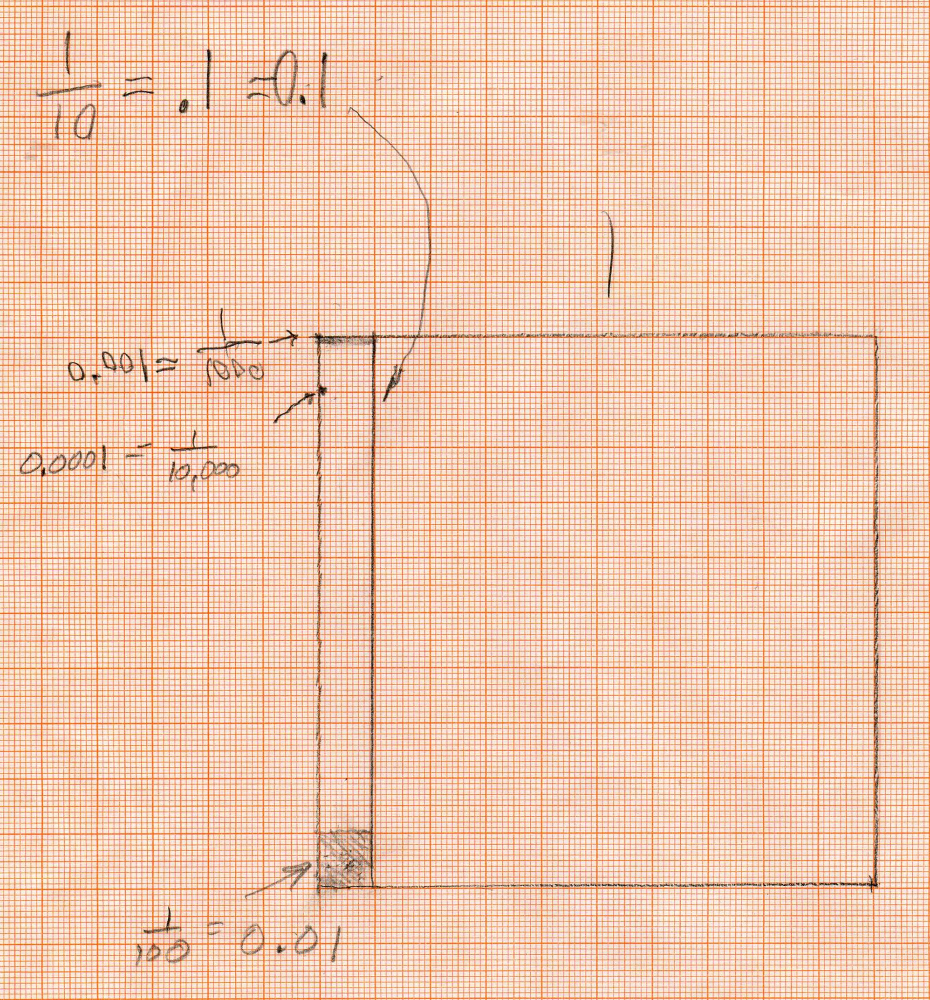
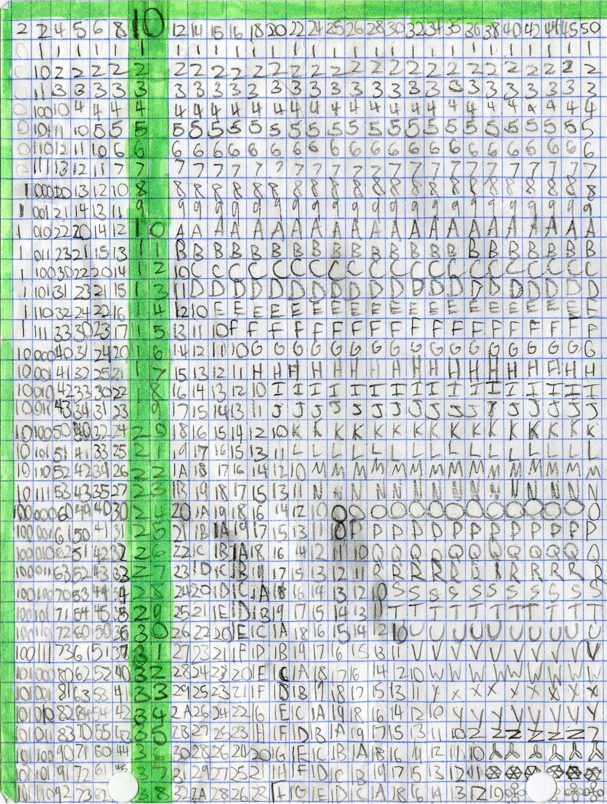

Decimals and Bimals/Chapter 2
Grace from Chicago, works in Don's worksheet book via email:

Sheri and The Magic Number Cards and counts in binary
Millimeter graph paper comes in handy to help Maya, age 9, understand decimals- the big square is 1, 1/10 of the big square is 0.1=1/10. 1/10 of 1/10 =1/100= 0.01 (at the bottom left). 1/10 of 1/100 = 1/1000 = 0.001. And 1/10 of 1/1000 = 1/10000 = 0.0001.

Kaitlin shares 3 cookies between 5 people- 3 ways (and writes 3/5 as a trimal!!)
Daly works on decimals, fractions and percent
Nanako works on decimals <=> fractions <=> percent, along with quadratic equations, the sum of the first 100 whole numbers, +
Jerry, a 5th grader, has worked on counting in different bases. He has extended this work and is using this as a basis for his code maker. Base 10 is in green going down. He has counted in some bases from 2 - 50 along the top row, down through 38.

Fine job, Jerry !
Don has rarely seen such persistence as Jerry has shown. He also figured out Anna's rule in about 20 minutes, after Don failed to get it in ~2 hours.